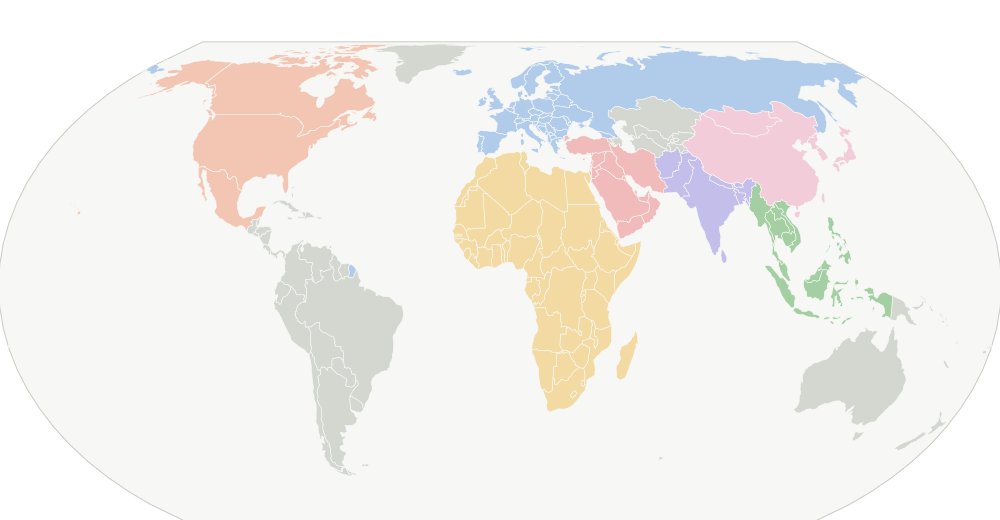

Pirelli, 미국서 스마트 타이어 'Cyber Tire' 공개… Pagani Utopia Roadster에 기본 장착
Pirelli가 미국에서 타이어를 지능형 장치로 바꾼다는 콘셉트의 'Cyber Tire'를 공개했다고 iMoD가 보도했다. 이 타이어는 Pagani Utopia Roadster에 표준 장착되며, 해당 차량이 이 기술을 적용한 첫 사례라고 전해졌다. 구체적인 센서 사양과 가격은 제공된 텍스트에 없다.

Pirelli가 미국에서 타이어를 지능형 장치로 바꾼다는 콘셉트의 'Cyber Tire'를 공개했다고 iMoD가 보도했다. 이 타이어는 Pagani Utopia Roadster에 표준 장착되며, 해당 차량이 이 기술을 적용한 첫 사례라고 전해졌다. 구체적인 센서 사양과 가격은 제공된 텍스트에 없다.
EVWORLD.COM은 프랑스 로렌 지역 공장이 전기차 선구 업체에서 가솔린 4x4 생산 거점으로 바뀌었다가 다시 전기차 생산으로 돌아간다고 보도했다. 생산 전환의 시점과 규모는 제공된 제목에서 확인되는 범위로만 알 수 있다.
현대차의 2027년형 아이오닉 6 N이 캐나다에 출시됐다고 Le Guide de l'auto가 24일 전했다. 가격은 8만 캐나다 달러를 넘는 수준으로 제시됐다.
캐나다 시장 가격대가 8만 달러를 넘어 고성능 전기차의 현지 포지셔닝 기준으로 참고할 만하다.
현대자동차그룹은 2026 LA 오토쇼에서 디 올 뉴 엘란트라를 공개했다고 영상 콘텐츠를 통해 알렸다. 영상은 미국 현지 반응을 함께 다뤘다.
캐나다 매체 Driving은 2027년형 렉서스 GX 550의 캐나다 시작 가격이 9만 2,214달러라고 보도했다. 금액은 캐나다 달러 기준 표기로 해석된다.
GlobalChinaEV는 캐나다 측 인사 모레노가 미국이 중국산 차량을 금지하면 중국에서 생산된 캐나다 측 전기차도 미국 시장에서 제외된다고 말했다고 보도했다. 미국의 규제 방향이 캐나다 산 중국 생산 전기차의 북미 수출 경로에 영향을 줄 수 있다는 취지다.
The EV Report는 2026년 11월 24일 현대 아이오닉 6 N의 캐나다 가격이 C$80,199로 책정됐다고 보도했다. 트림 구성과 사양 세부 내용은 전해지지 않았다.
Líderes Mexicanos는 2026년 11월 24일 2027년형 링컨 코르세어 하이브리드가 멕시코에 들어왔다고 보도했다. 가격과 파워트레인 세부 사항은 제시되지 않았다.
미국 GM이 레이더 기술에 쓰일 상표 'Isarwave'를 출원했다고 독일 Tuningblog가 2026년 11월 24일 보도했다. 상표 출원 사실만 전해졌고 제품 출시 계획은 나오지 않았다.
독일 자동차 매체 autohaus.de는 2026년 11월 24일 캐딜락 에스컬레이드 IQ를 직접 몰아본 시승기를 실었다. 기사는 차체가 큰 점을 강조하는 방향으로 전해졌으며, 구체적인 사양과 가격은 본문에 나오지 않았다.
대형 전기 SUV의 차체 크기가 주행 경험의 핵심 가치로 제시되고 있어, 대형 차량의 실내 공간과 적재 구성 설계 방향을 점검할 근거가 된다.
중국 汽车之家는 11월 24일 신형 캐딜락 XT6의 렌더링 이미지가 공개됐다고 보도했다. 외관은 전동화 느낌의 디자인을 적용했지만 파워트레인은 여전히 내연기관이라는 점을 전했다.
전동화 외관 언어와 내연기관 파워트레인을 함께 쓰는 구성은 플랫폼 공용화와 외장 디자인 방향을 정할 때 참고가 된다.
autoflotte.de는 2026년 11월 24일 메르세데스의 레벨 2++ 자율주행 시스템이 승인을 받았다고 보도했다. 해당 매체는 독일 시장 기준의 자율주행 단계 인가 소식으로 전했다.
레벨 2++ 승인은 운전자 감시 의무가 남는 조건에서 HMI와 주행 보조 조작계 설계 범위를 정하는 근거가 된다.
Auto Express는 2026년 11월 24일 보도에서 포르쉐의 새 Boxster 전기차가 운전 재미 측면에서 좋은 평가를 받았다고 전했다. 매체는 전동 스포츠카의 등장을 두고 스포츠카 시장의 변화를 예고하는 흐름으로 소개했다.
Autoappassionati.it는 2026년 11월 24일 보도에서 이탈리아에서 생산될 소형차 신형 피아트 Koala 2027의 모습이 드러나고 있다고 전했다. 매체는 이 차량을 가격 약 1만5천 유로 수준의 시트로엥 2CV와 닮은 모델로 소개했다.
약 1만5천 유로라는 가격대는 소형 전기차 혹은 내연기관 소형차 중 어떤 파워트레인으로 기획되는지에 따라 원가 구조와 실내 공간 설계 방향이 달라질 수 있음을 보여준다.
폭스바겐이 독일에서 'ID.Polo GTI 클럽스포츠 콘셉트'를 세계 최초로 공개했다고 ｄメニューニュース가 11월 24일 보도했다. 보도는 2인승 FF 스포츠카이며 와이드 보디와 대형 리어 윙, BBS 휠을 갖춘 것으로 소개했다.
2인승 구성과 대형 리어 윙은 실내 수납 공간과 공력 부품 배치를 함께 검토해야 하는 요소다.
LE VOLANT WEB은 포르쉐가 신형 718 박스터를 2027년 초 완전 전기차로 공개할 예정이라고 11월 25일 보도했다. 보도에 따르면 배터리는 차량 후방에 탑재되며, 가상 PDK와 플랫 6 엔진 사운드를 구현한다.
후방 배터리 배치는 트렁크 용량과 무게 중심 설계에 직접 영향을 준다.
Elli CEO 지오바니 팔라초는 브뤼셀에서 열린 'V2G Leaders Europe' 업계 회의에서 폭스바겐그룹이 2026년 12월 양방향 충전 상품을 출시한다고 발표했다. 이 패키지의 요금 구조와 주문 절차가 확정됐다고 전해졌다. 하드웨어인 'Elli BiDi Charger'는 부가세와 배송비를 포함해 1,995유로이며 Elli에서 직접 주문할 수 있다. 충전·방전 출력은 최대 11kW이고 400V와 800V 아키텍처를 지원하며 ISO 15118-20을 지원한다. 독일 시장 출시에는 폭스바겐, 폭스바겐 상용차, 쿠프라와 함께 슈코다도 참여한다. 이후 다른 유럽 국가로 확대할 계획이지만 일정은 정해지지 않았다.
400V·800V 겸용과 ISO 15118-20 지원, 실내외 설치 가능 구조는 차량 플랫폼과 홈 충전 설치 위치를 함께 고려해야 하는 설계 기준이 된다.
BYD는 프랑스 모젤주 함바흐에 있는 Ineos Automotive의 차량 생산 공장 인수를 위한 독점 협상에 들어갔다고 발표했다. 회사는 인수 거래가 노동자평의회와의 협의를 거쳐야 한다고 밝혔으며, 목표는 유럽 운전자에 맞춘 차량을 이곳에서 생산하는 것이라고 설명했다. 같은 날 에마뉘엘 마크롱 대통령은 X에 글을 올려 BYD가 모젤에 산업 프로젝트를 추진 중이라고 확인했다. 세부 내용은 2027년 1월 18일 Choose France 투자 정상회의에서 발표될 예정이다.
REVISTA AUTOSMAS는 2026년 11월 24일 볼보가 50년 전 전기 프로토타입 ‘Elbil’을 선보였다는 소식을 전했다. 당시 차량의 사양과 성능은 본문에 담기지 않았다.
독일 튜닝 매체 Tuningblog는 2026년 11월 24일 보도에서 Moba가 전기차 진단 기능에 고장코드(Fehlercode) 보고서 기능을 추가했다고 전했다. 본문이 짧아 세부 기능과 대상 차종은 확인할 수 있는 정보가 없다.
독일 VISION mobility는 2026년 11월 24일 BYD가 Ineos의 공장을 인수하려 한다고 보도하며, 이에 따라 Ineos 그레나디어의 향후가 주목된다고 전했다.
생산 거점이 바뀌면 그레나디어 같은 기존 차종의 생산 계획과 부품 공급 구조가 달라질 수 있다.
스위스 일간 아르가우어 차이퉁(Aargauer Zeitung)은 테슬라가 스위스 아라우(Aarau)에서 어시스트 주행 기능을 시험하고 있다고 보도했다. 시험 방식과 범위, 시험 기간은 보도 요약만으로는 확인되지 않는다.
유럽 도로 조건에서 주행 보조 기능이 어떤 환경에서 시험되는지가 현지화 기획의 기준이 된다.
프랑스 자동차 매체 L'Automobile Magazine은 BMW가 중국 의존도를 줄이기 위해 방산 대기업과 손잡는 배경을 다뤘다. 협력의 구체적 범위와 계약 내용은 요약에 포함되지 않았다.
공급망 다변화가 부품 조달처와 개발 일정에 미칠 영향을 기획 단계에서 함께 고려해야 한다.
프랑스 매체 Roole Média는 2026년 11월 기준으로 유럽산 배터리 추가 보조금(surprime)을 받을 수 있는 전기차 목록을 소개했다. 본문 요약이 제목 수준에 그쳐 해당 차종과 금액 조건은 이 매체 기사에서 확인할 수 있다.
富途牛牛는 2026년 11월 24일 중국산 차량 3만 대 이상이 영국 중고차 시장에 들어왔다고 보도했다. 중국 브랜드의 영국 중고차 유통 확대를 보여주는 소식이다.
Daily Express는 2026년 11월 24일 Andy Burnham 관련 정책으로 1,475파운드 규모의 자동차 세금 규정 변경이 2027년 4월에 시행된다고 보도했다. 시행 시점과 금액이 명시된 정책 변화 소식이다.
MotorBox는 2026년 11월 24일 페라리 루체(Luce) 발표와 관련해 비냐(Vigna)가 발표 과정의 실수를 인정하고 다시 하지 않을 부분을 언급했다고 보도했다.
Motor1.com Italia는 2026년 11월 24일 영국 브랜드 젠슨(Jensen) 인터셉터가 1,000마력 V8 엔진을 얹어 부활한다고 보도했다.
L'Algérie Aujourd'hui는 2026년 11월 24일 알제리 오랑 지역에서 '그랑드 판다'가 현지에 등장했다고 보도했다. 매체는 지역 차원의 소식으로 전했다.
인디펜던트 뉴스페이퍼 나이지리아는 2026년 11월 24일 중고차 안전성 평가 체계 VehCAP을 언급하며, 새로운 수입 규정으로 나이지리아 중고차 시장의 비용 부담이 커질 수 있다고 전했다.
중고차 수입 기준이 강화되면 안전 사양 확보 비용이 판매 가격과 차량 구성에 반영될 수 있다.
AutoNext.co는 2026년 11월 24일 폭스바겐 Tengo가 남아공 카리에가 라인에서 유럽 수출용 폴로와 함께 생산된다고 보도했다. 생산 물량이나 시장별 세부 조건은 본문에 나오지 않는다.
카맥 남아프리카는 2026년 11월 24일 2027년 남아공에 출시가 확인된 모든 픽업 트럭을 정리했다고 보도했다. 목록에는 신형 토요타 힐럭스 GR-스포트와 체리 그루트맨 등이 포함됐다.
프랑스령 레위니옹섬 매체 Le Quotidien de La Réunion는 고급 중국 브랜드 아이엠(IM)의 중형 세단 IM5와 IM6가 현지에 들어온다고 보도했다. 판매 가격과 출시 시점 등 세부 조건은 요약에서 확인되지 않는다.
해외 섬 지역은 열대 기후와 좌측통행 등 현지 사용 조건이 본토와 다르므로, 해당 조건에 맞춘 사양 검토가 필요하다.
프라바트 카바르(Prabhat Khabar)는 2026년 11월 24일 인도 타타 모터스가 주행거리 500km 이상을 내세운 7인승 전기 SUV 두 종을 출시할 예정이라고 전했다. 출시 일정과 주요 특징을 함께 소개했다.
Pkrevenue.com은 2026년 11월 24일 메르세데스-벤츠 G 580 전기 SUV가 파키스탄에서 1억 2,200만 루피(Rs122 million)에 출시됐다고 보도했다.
CarDekho는 JSW Motors가 브랜드 로고를 먼저 공개했으며, 이어 JSW Jetour T2(Combat)를 12월 3일 출시한다고 전했다.
Cartoq은 Toyota가 향후 12개월 안에 인도에서 MPV 3종을 출시할 예정이라고 보도했다. 여기에는 HyCross 페이스리프트와 Rumion 페이스리프트가 포함된다.
인도 매체 Auto India Daily는 타타 펀치 플렉스 퓨얼 모델이 푸네 인근에서 시험 주행 중인 모습이 포착됐다고 보도했다. 매체는 출시 예정 시점과 세부 정보를 다룬다고 소개했지만, 본문은 제목과 짧은 요약만 확인된다. 구체적인 사양이나 가격은 확인되지 않았다.
GlobalChinaEV는 Jetour Huanyouzhe EV가 8만9900위안(CNY)부터 출시됐으며, 사전 판매 가격보다 최대 2만 위안 낮다고 보도했다. 해당 가격은 중국 시장 기준이며, 사양과 옵션별 차이는 제공된 텍스트에 없다.
중국 시장에서 사전 판매 대비 가격을 낮춘 출시 방식은 트림 구성과 가격 포지셔닝을 정할 때 참고할 만한 사례다.
Motorpasión México는 2026년 11월 24일 폭스바겐이 중국에서 생산한 차량을 해외에 30만 대 수출하는 전략을 추진한다고 보도했다. 매체는 이 전략을 '중국에서 만들어 전 세계에 판매'라는 기조로 소개했다. 기사 요약문만 확인되며 차종 구성과 수출 시장별 세부 계획은 제시되지 않았다.
녹색경제신문은 양산 준비를 마친 현대차 N 비전 74가 사업성 문제에 막혀 멈춘 것이 아닌지 제기했다고 24일 보도했다. 보도는 양산 결정의 배경을 질문 형태로 다뤘다.
L'Automobile Magazine은 2026년 11월 24일 보도에서, 아우디의 중국 미래를 상징하도록 지어진 신축 공장이 현재는 거의 비어 있는 상태로 가동되고 있다고 전했다. 매체는 이 공장이 아우디 중국 전략의 핵심으로 기대를 모았다고 덧붙였다.
중국 신랑왕(新浪网)은 2026년 11월 25일 광저우 모터쇼 신차 사전 소개 기사를 내보내며 동펑닛산 모델이 12.99만 위안부터 책정됐다고 전했다. 같은 기사에서 BMW i3는 아직 가격이 정해지지 않은 것으로 보도됐다. 기사 본문이 짧아 세부 사양은 확인하기 어렵다.
중국 신랑왕(新浪网)은 2026년 11월 25일 웨이라이(NIO)가 'Human' 설계 철학을 유지한다고 보도했다. 회사는 캐빈에서 부드러운 피드백을 주는 방식으로 차량에 생동감을 부여하겠다는 방향을 제시했다.
캐빈 인터랙션을 기능 버튼이 아니라 반응형 피드백으로 설계할 때 조작계 배치와 촉각 반응 기준을 함께 정해야 한다.
중국 신랑왕(新浪网)은 2026년 11월 25일 웨이라이의 '천공도(天空岛)' 설계를 소개하며 '여왕 좌석'과 '세로 천량(天梁)' 개념을 다뤘다. 기사 요약에 따르면 설계 범위가 뒷좌석 경험부터 차량 구조 요소까지 걸쳐 있다.
중국 자동차之家(汽车之家)는 2026년 11월 25일 화징 S의 5인승 버전이 포착됐다고 보도했다. 후석에서 다리를 꼴 수 있고 원터치로 대형 침대 모드로 전환되는 구성이 함께 소개됐다.
후석 레그룸과 좌석 전환 기능을 함께 설계하려면 시트 구조와 바닥 공간의 간섭을 우선 검토해야 한다.
중국 자동차之家(汽车之家)는 2026년 11월 24일 지투(JETOUR)의 환유저 EV가 출시돼 8.99만 위안부터 판매된다고 전했다. 매체는 한 대로 세 대의 역할을 한다는 점을 강조했다.
다목적 활용을 내세운 차량은 적재 공간의 가변 구성과 가격대별 옵션 배치를 함께 검토할 필요가 있다.
중국 자동차之家(汽车之家)는 2026년 11월 25일 팡청바오(Fangchengbao)의 타이치7이 랜드로버로부터 소송을 당했다고 보도했다. 같은 매체는 유럽연합이 해당 차량의 판매를 임시로 금지했다고 전했다.
하드 SUV의 외관 디자인이 경쟁사와 충돌할 수 있으므로 실루엣과 디테일 차별화 기준을 사전에 점검해야 한다.
중국 자동차之家(汽车之家)는 2026년 11월 24일 팡청바오가 '팡청 S' 시리즈를 발표했다고 보도했다. 매체에 따르면 세단, 왜건(사냥용 차량), 대형 세단의 세 가지 형태로 구성된다.
하나의 플랫폼에서 세 가지 바디 형태를 파생시킬 때 공통 구조와 적재·실내 공간의 차이를 함께 설계해야 한다.
중국 매체 汽车之家는 2026년 11월 24일 문제(Aito) 신형 M7의 내장을 처음 공개했다고 보도했다. 조수석 쪽 화면이 커졌고, 동력 방식별로 5인승과 6인승 배치를 함께 신고했다고 전했다.
조수석 디스플레이 확대는 대시보드 레이아웃과 승객용 조작계 배치를 함께 검토해야 한다는 점을 보여준다.
중국 매체 汽车之家는 2026년 11월 24일 홍치 톈궁 07을 포함한 세 차종이 座舱 AI 등급 평가를 처음 받았다고 보도했다. 해당 평가 기준이 실제 적용되기 시작했다는 내용이다.
座舱 AI 등급 기준이 자리 잡으면 음성·화면 중심 인터페이스 설계의 평가 항목이 명확해진다.
국내 매체 아주경제는 2026년 11월 25일 BYD 덴자 B5가 180톤 보잉 747을 견인하는 데 성공했다고 보도했다. 두 바퀴만으로 이뤄진 시연이며, 세계 최초라는 점을 내세웠다고 전했다.
오토센티널은 2026년 11월 24일 제네시스 X 스콜피온 콘셉트카의 양산 가능성을 보도했다. 1,100마력 오프로드 콘셉트로, 출시 시점으로 2030년이 거론됐다고 전했다.
오프로드 콘셉트를 양산으로 옮길 때 차체 강성과 하부 보호 같은 내구 요건이 설계 판단의 핵심이 된다.
디지털데일리는 2026년 11월 25일 현대차그룹이 전기차 완속충전기를 통합한 제품을 내년 국내에 내놓는다고 보도했다. 제품 구성과 출시 시점을 중심으로 다뤘다.
완속충전기 통합은 차량과 충전 설비 간 인터페이스와 설치 공간 기준을 함께 정하는 데 참고가 된다.
현대자동차그룹은 2026년 11월 24일 공식 뉴스룸을 통해 ‘HMG 글로벌 완속충전기’를 공개했다고 발표했다. 그룹 차원의 완속충전 제품 라인업을 알리는 내용이다.
현대차그룹이 글로벌 완속충전기를 공개하고 내년 국내 출시를 계획하고 있다고 IT조선이 11월 25일 보도했다. 보도에서 제품의 세부 사양과 가격 정보는 확인되지 않았다.
혼다가 신형 SUV '아반시아'에 돌비 애트모스를 탑재했다고 Car Watch가 11월 24일 보도했다. 보도는 일본 자동차 제조사가 국내에서 판매하는 차량 중 돌비 애트모스를 탑재한 첫 사례라고 전했다.
실내 오디오 시스템 사양 확장은 스피커 배치와 헤드레스트·천장 등 내장 구조 설계에 영향을 준다.
카뷰(carview!)는 2026년 11월 24일 보도에서 중국 브랜드 iCAR의 V27을 다뤘다. 약 400만 엔대 가격과 각진 디자인, 후륜구동 방식을 특징으로 내세웠고, 일본 매체가 이를 토요타 랜드크루저 250에 빗대어 소개했다.
디메뉴뉴스(d메뉴ニュース)는 2026년 11월 24일 BYD의 신형 SUV '방청표(方程豹) Ti9'이 중국에서 출시됐다고 전했다. 전장 5.3m급으로 토요타 알파드보다 크다고 소개했고, 1.5리터 엔진 탑재와 540마력 이상 출력, 접을 수 있는 스티어링 휠을 주요 특징으로 꼽았다.
6인승 대형 SUV에서 접이식 스티어링 휠 같은 신규 조작계 요소가 실제 사용성과 승하차 편의에 어떤 영향을 주는지 검토할 필요가 있다.
BYD가 플러그인 하이브리드 픽업 '팡청바오 샤크(Fang Cheng Bao Shark)'를 12월 2일 중국 시장에 선보일 예정이라고 iMoD가 보도했다. 보도는 출시 일정 외 세부 사양이나 가격은 전하지 않았다.
베트남 매체 thuonghieucongluan.com.vn은 동펑 eπ EP7이 곧 출시되며, 최대 710km를 주행할 수 있고 배터리 교환 버전도 있다고 보도했다. 해당 주행거리의 측정 기준과 출시 국가는 확인되지 않았다.
배터리 교환 옵션이 함께 제공된다는 점은 차량 하부 패키지와 충전 인프라 연계 설계에 영향을 줄 수 있다.
BYD는 11월 24일 3세대 탕(Tang) 전기 SUV를 공식 출시했다고 밝혔다. 5인승 중대형 SUV로 후륜구동 3개 트림이 있으며, 시작 가격은 187,900위안(약 2만8천 달러)이다. 이는 11월 13일 사전 판매가 225,000위안보다 16.49% 낮은 수준이다. 최상위 트림에는 20,000위안을 더해 전륜구동(AWD) 드라이브 바이 와이어 옵션을 고를 수 있다. 신형 드라이브 바이 와이어 디지털 섀시를 적용해 조향·제동을 기계식 연결 없이 제어하며, 회사는 응답 속도가 25% 이상 빨라졌다고 주장했다. 후륜 모델은 300kW 모터와 CLTC 기준 730km 또는 850km 주행거리를 제공하고, 듀얼 모터 AWD는 합산 515kW에 0→100km/h 4.3초, CLTC 770km이다.
조향과 제동을 전기 신호로 처리하는 구조라 조작계 반응 특성과 페달·핸들 피드백 설계를 중국 시장 기준으로 재검토할 필요가 있다.
iMoD는 BYD가 접이식 스티어링 휠을 Fang Cheng Bao Tai 9 양산 라인에 적용한다고 보도했다. 이는 E-SEED GT 콘셉트카의 아이디어를 이어받은 것이라고 전했다.
접이식 스티어링 휠은 조작계와 승하차 공간 설계에 영향을 주므로, 양산 적용 방식과 안전 기준 대응을 눈여겨볼 만하다.
Motor1.com Italia는 2026년 11월 24일 중국에서 판매량 1위를 기록한 준중형 5도어 차량이 무엇인지 조명하는 기사를 실었다. 본문은 제목과 짧은 소개만 포함되어 있어 판매 1위의 배경과 수치는 확인할 수 없다.
汽车之家는 2026년 11월 24일 중국의 최신 국가 차량 구매 보조금 신청 조항을 짧게 정리했다고 전했다. 폐차 후 신차 교체 시 최대 2만 위안을 지원한다는 내용이 제목에 담겨 있다.
보조금 조건이 폐차 교체 여부에 따라 달라지므로, 중국 시장 전략에서 가격 포지셔닝과 교체 수요 타깃을 함께 고려해야 한다.
중국 자동차 매체 汽车之家는 11월 24일 보도에서 이틀 동안 신에너지차 5종이 발표됐다고 전했다. 매체는 순수 전기차가 이미 절대적 주류가 됐다고 짚었고, 리빈 바이두? 아닌 니오 창업자 리빈(李斌)의 예측이 앞당겨 실현되고 있을 수 있다고 덧붙였다.
중국 汽车之家는 11월 24일 중고 전기차 시장에서 배터리·모터·전장 등 '삼전'에 대한 평생 보증이 제공되지 않는 점을 다뤘다. 매체는 이 질문을 중심으로 중고차 보증 구조를 짚었다.
배터리 등 핵심 부품의 보증 조건은 중고 전기차의 잔존 가치와 구매 신뢰도를 좌우하므로, 인증 중고차 프로그램 기획 시 고려할 요소다.
중국 매체 手机新浪网는 11월 24일 지하 주차장에서 대형 6인승 차량의 문이 주차 공간에 걸리는 사례를 보도하며, 신차가 계속 커지는 이유를 짚었다.
차체 크기 확대는 주차 환경과 문 개폐 공간에 직접 영향을 주므로, 대형 차량의 도어 구조와 주차 가이드 설계에서 검토할 지점이다.
홍콩 01은 11월 24일 보도에서 중국 본토 신차 129종이 여전히 팔리지 않고 있다고 전했다. 매체는 올해 내수 판매가 524만 대에 그쳐 12년 전 수준으로 돌아갈지 모른다는 전망을 소개했다.
신차 공급이 수요를 크게 웃도는 상황이라, 차종 라인업 축소와 차별화 기준을 재검토해야 할 시점임을 보여준다.
중국 手机新浪网는 11월 25일 대형 6인승 신에너지 SUV 4종을 비교 평가했다고 보도했다. 매체는 가족 단위 탑승자를 위한 승차 편의성과 안전 사양을 평가 기준으로 삼았다.
3열 탑승 편의와 안전 장비 구성은 대형 SUV의 실내 공간 배분과 안전 사양 기획에 직접 연결된다.
중국 汽车之家는 11월 24일 링컨이 플래그십 신에너지 SUV의 이름을 '링컨 飞行家 EX8'로 공식 확정했다고 보도했다. 매체는 이번 발표로 해당 모델의 명칭이 확정됐다고 전했다.
중국 매체 手机新浪网은 2026년 11월 24일 奕境X9을 포함한 4개 차종을 비교한 기사를 게재했다. 제목은 30만 위안급 가정용 신에너지 SUV를 대상으로 공간, 주행거리, 지능형 주행 보조 기능을 비교한다고 소개했다. 기사에는 FAQ가 함께 실렸다.
중국 매체 手机新浪网은 2026년 11월 24일 2026년 10월에 나온 신차 중 硬派 감성의 박스형 차량 4종을 비교한 기사를 실었다. 제목은 강인한 디자인과 주행 편의성을 함께 갖춘 차량을 다룬다고 밝혔다.
박스형 실루엣의 강한 외관 디자인과 운전 편의성을 함께 고려하는 상품 기획의 참고 사례가 된다.
중국 매체 中华网은 2026년 11월 24일 샤오미가 3분기 신차 인도량이 10만 대에 이르렀다고 보도했다. 같은 보도는 스마트 전기차 사업이 빠르게 성장하고 있다고 전했다.
미국 매체 CarScoops는 2026년 11월 24일 한국 SUV가 Jeep 스타일의 전면부와 Range Rover 스타일의 후면부를 결합했다고 보도했다. 기사 제목은 이 차량의 외관 조합을 중심으로 다룬다.
전면과 후면의 서로 다른 브랜드 디자인 언어를 한 차량에 결합하는 방식은 외장 디자인 콘셉트 검토에서 참고할 수 있다.
인도네시아 매체 Demokratis.co.id는 2026년 11월 24일 전기 SUV E6 EV가 레오파드 디자인을 전면에 내세웠다고 보도했다. 외관 디자인 방향을 현지 브랜드 정체성과 연결한 사례다.
현대자동차의 소형 트럭 H-100 포터 5세대 모델이 2027년 인도네시아에 나올 예정이라고 cwibc.co.id가 2026년 11월 24일 보도했다. 현지 상용차 시장을 겨냥한 세대 교체 소식이다.
베트남 매체 Tuổi Trẻ는 베트남에서 새로 나온 플러그인 하이브리드 차량이 전기 충전 상태에서 호찌민시부터 꽝찌성까지 이동하는 모습을 소개했다. 구체적인 주행 거리 수치는 제목만으로는 확인되지 않는다.
장거리 이동 시 전기 주행과 엔진 구간을 나눠 쓰는 사용 패턴이 현지 도로 조건에서 어떻게 작동하는지 기획 검토에 참고할 만하다.
Car and Driver가 2028년형 Porsche 718 Boxster EV 프로토타입의 사진을 공개했다고 보도했다. 양산 사양이나 출시 일정은 제공된 텍스트에 없다.
Car and Driver는 Ineos가 프랑스 공장을 중국 BYD에 매각한 뒤 Grenadier를 미국에서 생산할 계획이라고 보도했다. 생산 시설의 위치와 시기는 제공된 텍스트에 없다.
프랑스 생산 거점 이전과 미국 현지 생산이 맞물리면서, 북미 시장 대상 차량에서는 현지 조립 조건이 기획 전제로 중요해진다.
Porsche Newsroom은 첫 순수 전기 718 Boxster의 개발이 마무리 단계에 들어섰다고 발표했다. 발표문은 주행의 감성적 경험을 강조했으나, 구체적인 수치는 제공된 제목 범위를 넘지 않는다.
벤틀리가 변동성이 큰 시장 환경 속에서 맞춤 제작(bespoke) 사업을 넘어 토칼(Torcal) 전기차를 내세우고 있다고 Automotive News가 24일 보도했다. 기사 본문은 확인할 수 없어 요약에는 제목에 나온 내용만 담았다.
포르쉐 뉴스룸은 첫 100% 전기 718 박스터의 개발이 최종 단계에 들어갔다고 24일 밝혔다. 세부 사양은 함께 알려지지 않았다.
모토르파시온은 포르쉐가 전기 스포츠카에는 출력 이상의 요소가 필요하다고 판단했다고 보도하며, 새 718 박스터에 중앙 배치 배터리가 들어가고 가상 PDK 변속 기능도 적용될 것이라고 24일 전했다.
배터리를 차체 중앙에 두는 배치가 무게 배분과 실내 공간 구성에 어떤 영향을 주는지 검토할 필요가 있다.
하이모터는 스즈키가 자동차와 오토바이의 특성을 한 차량에 담은 미사노 EV 컨셉을 공개했다고 24일 보도했다.
자동차와 이륜차의 특성을 한 차체에 합치는 방식은 탑승 자세, 보호 구조, 조작계 설계에 새로운 기준을 요구한다.
Fleet News는 2026년 11월 24일 보도에서 스바루가 새 전기 플래그십 모델 E-Outback의 사양과 가격을 발표했다고 전했다. 기사 본문은 발표 사실을 중심으로 다루고 있다.
Motori Magazine은 2026년 11월 24일 보도에서 네덜란드 헤이그 법원의 판결에 따라 BYD Ti7의 EU 내 판매가 금지됐다고 전했다. 판결 세부 근거는 기사 제목 수준에서 확인되는 범위로 전해졌다.
중국 자동차之家(汽车之家)는 2026년 11월 24일 현대 N 비전 74의 양산 계획이 보류됐다고 보도했다. 같은 매체는 제네시스 Magma GT에 811마력 V8 엔진이 탑재된다고 전했다.
폭스바겐이 차중박 사양의 'ID.Buzz Beach'를 발표했다고 AUTOCAR JAPAN이 11월 24일 보도했다. 차량에는 더블베드와 차광 커튼이 적용됐다.
더블베드와 차광 커튼은 취침 공간의 치수와 채광 차단 구조를 함께 설계해야 하는 요소다.
태국어 기사로 Vietnam.vn이 2026년 11월 24일 태양광 패널을 단 전기차는 매일 충전할 필요가 없다는 내용을 보도했다. 다만 구체적인 주행거리나 조건은 확인되지 않은 채 제목만 전해졌다.
베트남 매체 Báo Tiền Phong은 혼다가 하이브리드 버전의 신형 CR-V와 HR-V를 순차적으로 선보일 것이라고 보도했다. 공개 일정과 시장별 사양은 이 보도에서 확인되지 않았다.
Paul Tan's Automotive News는 포르쉐 718 박스터 EV가 2027년 1분기에 공개된다고 보도했다. 보도에는 E-Core 아키텍처, 800V 시스템, E-Shift, 0-100km/h 3초 미만 가속, 250km/h 이상 최고속도가 포함됐다.
800V 전기 아키텍처와 변속 방식(E-Shift)이 적용된다는 점은 스포츠카 전기화 방향의 플랫폼 설계 검토 지점이다.
베트남 매체 Vietnam.vn은 메르세데스-벤츠 베이비 G가 시험 주행 중 포착됐으며 전기차와 하이브리드 두 가지 버전이 있다고 보도했다. 출시 시기와 사양은 이 보도에서 확인되지 않았다.
하나의 차체에 전기와 하이브리드 파워트레인을 함께 준비하는 구성은 배터리 탑재 공간과 플로어 구조 설계에 영향을 준다.
wandaloo.com은 2026년 11월 24일 GWM 하발 H7 Max 2026년형의 유로 NCAP 충돌시험 결과를 다룬 기사를 게재했다. 제목 이외 구체적 점수나 시험 세부 내용은 확인할 수 있는 본문에 없다.
핀란드 Fortum은 Harjavalta 사이트에서 진행한 파일럿 캠페인으로 배터리 소재를 생산했다고 밝혔다. 회수 소재를 이용해 고순도 배터리 원료를 만들고 CO₂ 배출을 줄이는 신기술의 가능성을 보여주겠다는 계획이다. 회사는 진행 중인 고객 적격성 검토에서 긍정적 반응을 받았다고 설명했다. 또한 여러 잠재 구매자와 오프테이크 계약을 논의 중이다. 공정의 핵심은 필수 공정 화학물질을 내부에서 순환시키는 폐쇄 루프 구조로, 화학물질 소비와 폐기물 발생을 줄이는 것이 목표다.
Wallpaper*는 Lotus 본사에서 신형 Emira Sport 420을 직접 타보며 이 브랜드의 향후 방향을 살펴봤다고 전했다. 기사 요약에는 차량의 세부 사양이나 판매 계획은 나오지 않았다.
Motor1.com은 전 디자이너 Ian Callum이 자신이 오랫동안 구상해 온 Aston Martin Vanquish를 마침내 만들었다고 보도했다.
CarBuzz는 링컨이 신형 애비에이터 플러그인 하이브리드(PHEV) 모델을 공식 출시했지만 미국 시장에는 나오지 않는다고 보도했다. 출시 지역은 미국 외 시장으로 한정된다.
같은 차종이라도 시장별 파워트레인 구성이 달라지므로, 글로벌 플랫폼 기획 시 지역별 파워트레인 분기 전략을 고려해야 한다.
El Carro Colombiano는 2026년 11월 24일 포르쉐가 콜롬비아에서 카이엔 일렉트릭을 예로 들어 전기차에 엔진오일이 필요한지 설명했다고 보도했다. 구체적인 정비 항목과 주기는 확인되지 않았다.
내연기관 대비 정비 항목이 줄어드는 점은 소비자 정비 안내서와 서비스 주기 설계 기준에 반영될 수 있다.
스페인 마요르카 지역 매체 Mallorcadiario.com은 EBRO s400 HEV Premium의 가격을 18,990유로로 전했다. 하이브리드 트림의 최상위 사양 가격이라는 점만 보도됐으며, 세부 사양과 판매 지역은 확인되는 내용이 없다.
프랑스 매체 Actu.fr는 확장형 카시트 피나리오(Fenarrio) AS5를 직접 써 본 리뷰를 게재하며 안전, 편안함, 혁신성을 주요 평가 축으로 다뤘다. 기사 요약에는 구체적 사용 연령대나 가격 정보가 담기지 않았다.
아이가 자라면서 시트 형태를 바꾸는 구조가 차량 내 장착 방식과 안전성에 어떤 영향을 주는지 검토할 만한 사례다.
디자인 매체 Foro3D는 2026년형 제네시스 GV80 쿠페를 소개하며 스포티한 외관 디자인과 장거리 주행에 어울리는 성격을 함께 조명했다. 가격, 사양, 출시 시기는 요약에서 확인되지 않는다.
SUV 기반 쿠페형 실루엣을 스포츠 이미지와 실사용 주행감 사이에서 어떻게 균형 잡았는지 참고할 수 있다.
프랑스 기술 매체 Frandroid는 포르쉐가 전기 718 박스터 생산을 포기하지 않았으며 2027년 출시를 확정했다고 보도했다. 같은 기사에서 0~100km/h 가속 시간은 3초로 소개됐다.
bevolt.com은 2026년 11월 24일 방전된 전기차를 휴대용 배터리로 충전할 수 있는지 묻는 기사를 게재했다. 긴급 상황에서의 대응 방식에 대한 관심을 보여준다.
긴급 충전 대응을 위해 차량에 포터블 배터리 연결 단자나 보관 공간을 고려할 필요가 있는지 검토할 수 있다.
Highmotor는 2026년 11월 24일 세아트(Seat)의 20V20 프로토타입이 'Automotive Brand Contest'에서 최고 프로토타입 디자인 상을 받았다고 전했다.
Rumors.it은 2026년 11월 24일 기아(Kia)와 드 몽텔(De Montel)이 디자인, 자동차, 웰니스를 잇는 협업을 선보였다고 보도했다.
HDmotori는 2026년 11월 24일 신형 메르세데스 GLB 2026을 소개하는 영상에서 전기차임에도 변속기(기어박스)를 갖춘 점을 부각했다.
전기차에 변속 기능을 더한 구성이 실제 주행 감성과 조작계 설계에 어떤 차이를 만드는지 검토할 필요가 있다.
SICURAUTO.it는 2026년 11월 24일 전기차의 지하 주차장 주차를 대상으로 한 새로운 소방 규정이 무엇이 달라지는지 다뤘다. 기사 요지는 전기차 화재 대응을 위한 지하 주차 공간의 안전 기준 변화에 관한 것이다.
지하 주차장 설계 시 전기차 충전 위치, 소화 설비, 배연 동선 등 안전 요건을 기획 단계에서 함께 검토해야 할 필요성을 보여준다.
호주 매체 CarSauce는 2026년 11월 24일 우측 핸들 방식의 Li Auto Mega가 포착됐다고 보도했다. 같은 매체는 해당 브랜드가 호주 시장 영업 책임자를 찾고 있다고 전했다.
우측 핸들 차량의 현지 출시 여부와 판매 조직 구성이 함께 검토되고 있다는 점이 호주 시장 진출 계획의 단서가 된다.
CNET은 Uber, Nuro, Lucid가 공동 개발 중인 고급 로보택시로 완전 무인 주행 테스트를 시작했다고 전했다. 테스트 지역과 운영 조건은 제공된 텍스트에 나와 있지 않다.
캐나다 CBC는 2026년 11월 24일 보도에서 전기차 배터리가 재활용되기보다 다른 용도로 재사용되는 사례가 많아지고 있다고 전했다. 기사 요약문만 확인되는 수준이라 구체적인 사업자나 수치는 확인되지 않는다.
배터리 수명 종료 후 2차 용도 전환이 늘면 차량 내 배터리 팩 탈착성과 셀 모듈 규격 설계가 회수 이후 활용성에 영향을 줄 수 있다.
멕시코 El Sol de México는 푸에블라 주 의회에서 2027년부터 전기차에 800페소의 차량 통제(관리) 부담금을 부과하는 안이 심의 중이라고 보도했다.
지역별 전기차 부과금은 보유 비용 구조를 바꾸므로, 현지 판매 전략과 가격 포지셔닝 기획에 반영할 필요가 있다.
Unite.AI는 누로(Nuro)가 샌프란시스코 베이 에어리어에서 루시드 그래비티 기반 무인 로보택시 시험을 시작했다고 24일 전했다. 운행 조건과 범위는 본문에서 확인되지 않았다.
Unite.AI는 2026년 11월 24일 보도에서 Nuro가 샌프란시스코 베이 지역에서 Lucid Gravity 기반 로보택시의 무인(운전자 없는) 주행 시험을 시작했다고 전했다. 기사 요지는 시험 개시 사실에 한정된다.
UrduPoint는 2026년 11월 24일 우버, 뉴로(Nuro), 루시드(Lucid)가 미국 베이 지역에서 무인(드라이버리스) 주행 시험을 시작했다고 전했다.
일렉트렉은 2026년 11월 24일 누로가 샌프란시스코 베이에어리어 공공도로에서 루시드 그래비티 로보택시의 무인 시험 주행을 시작했다고 보도했다. 시험은 팔로알토, 마운틴뷰, 로스알토스, 서니베일 4개 도시에서 진행되며, 루시드가 공급한 100대 이상의 그래비티 SUV가 투입됐다. 누로는 공개 출시 시기가 당초 2026년에서 2027년 1분기로 늦춰졌다고 밝혔다.
운전석이 비어 있는 상태의 차량 실내 배치와 승객 경험 설계가 로보택시 기획의 핵심 과제가 된다.
인사이드EVs는 2026년 11월 24일 루시드 그래비티 로보택시의 상업 출시가 가까워졌다고 보도했다. 일반 승객의 유상 운행은 2027년 1분기에 시작될 것으로 예상된다.
카앤드라이버는 2026년 11월 24일 루시드, 우버, 누로가 협업해 만든 로보택시가 샌프란시스코 베이에어리어에서 안전요원 없이 시험 주행을 시작했다고 보도했다. 차량은 우버가 소유·운영하며, 2027년 1분기부터 우버 앱을 통해 베이에어리어에서 탑승 서비스를 시작할 예정이다. 차량에는 우버가 설계한 실내 인터페이스와 누로의 자율주행 시스템이 적용됐다.
루비 형태의 루프 '헤일로'에 설치된 LED 조명은 승객이 호출 차량을 식별하는 장치로, 외관 조명 설계가 서비스 UX와 직결된다.
Operations Research에 실린 Erkan 등의 연구에 따르면, 미국 9개 도시의 전동 스쿠터는 이용 시간이 전체의 3.9%에 불과해 교통당국이 정한 최소 이용률 목표의 절반 수준이었다. 연구진은 이용자가 가장 가까운 스쿠터를 고르는 구조 때문에 운영사들이 같은 위치에 차량을 계속 추가하며, 기존 차량만으로도 수요 대부분을 충족할 수 있는 상황이라고 밝혔다. 캔자스시티(미주리주)의 과잉 공급률은 406%로 제시됐으며, 연구진은 운영 허가 축소와 이용률 규제를 권고했다.
차량 배치 밀도와 운영 허가 수를 기획 단계에서 고려해야 하며, 스쿠터 수납·거치 설계는 과밀 주차 상황을 전제로 해야 한다는 점을 시사한다.
현지 매체 Zag Daily는 뉴욕시가 회원에게 45분 이용 전동 자전거 요금을 3.65달러로 낮췄다고 보도했다. 공유 전동 자전거의 회원 요금 체계가 조정된 사례다.
단거리 이동 수요를 겨냥한 요금 구조가 공유 모빌리티 차량의 배터리 관리 및 배치 기획에 어떤 영향을 주는지 검토할 만하다.
Investor's Business Daily는 테슬라 로보택시의 경쟁 업체가 안전 요원(세이프티 모니터) 없이 도로 시험을 시작했다고 보도했다. 업체명과 시험 지역 등 세부 내용은 기사 요약에 포함돼 있지 않다.
차내 안전 요원이 빠진 상태의 자율주행 시험은 운전석 주변 인터페이스와 비상 상황 대응 UI 설계 요건에 직접 영향을 준다.
캐나다 정부가 자동차 제조사들에게 NACS와 CCS1 충전 방식을 유지할 것을 촉구했다고 Electric Autonomy Canada가 2026년 11월 24일 보도했다. 기사 본문은 확인되지 않았으며 제목 기준으로 전해진 내용이다.
북미 시장에서 충전 포트 규격이 어떤 방식으로 정해지는지에 따라 충전구 위치와 어댑터 설계 요건이 달라질 수 있다.
캐나다 매체 Sustainable Biz Canada는 2026년 11월 24일 Moment Energy의 Nova 시스템이 전기차에서 사용된 배터리를 재활용한다고 보도했다. 제목은 이 시스템이 2차 사용 배터리를 실제 운용에 투입한다는 점을 전했다.
KarloBag.eu는 2026년 11월 24일 베를린의 'mozu' 실험 공간에서 미래 모빌리티를 시험하고 있다고 보도했다.
독일 알고이어 차이퉁은 린다우 군의 한 소도시에서 무인 버스가 '라스트 마일' 구간을 운행할 가능성이 있다고 24일 보도했다. 기사 제목은 도입 여부를 의문형으로 제시했다.
ANSA는 2026년 11월 24일 보도에서 볼로냐가 카르산(Karsan)의 전기 트롤리버스 35대를 새로 들여온다고 전했다. 투자 규모는 3천만 유로로 소개됐다.
스위스 연방도로청(ASTRA)은 3개 구역으로 나눈 트럭 충전 인프라 입찰에서 사업자를 선정했다고 밝혔다. 1구역은 Zug 기반 Fastned Switzerland AG, 2구역은 프랑스 Aix-en-Provence 기반 Obornes SA, 3구역은 암스테르담 기반 Milence가 맡는다. 입찰에는 4개월 동안 11건이 접수됐으며 시공 품질과 에너지 효율이 주요 평가 기준이었다고 ASTRA는 설명했다. 선정 사업자는 2년 안에 사업 계획을 세우고 건축 허가를 신청해야 하며, 자금 조달·건설·운영을 맡는다. ASTRA는 전력 인입과 관련 비용의 선지급을 담당하고, 사업자는 연간 보상금 형식으로 이를 상환한다.
전력 인입은 공공이 맡고 사업자가 연간 보상으로 상환하는 구조라 트럭 충전소의 입지와 전력 용량 설계가 공공 계획과 맞물린다.
핀란드 매체 Future Transport-News는 헬싱키가 저녁 시간대 전동 킥보드 등 공유 이동수단에 속도 제한을 두는 방안을 검토하고 있다고 전했다. 업체 Voi, Dott, Ryde 측은 이 제한이 책임 있는 이용자를 불이익을 주면서 도로 안전을 높이지는 못한다고 반박했다.
시간대별 속도 제한이 도입되면 주행 모드 설정과 이용자 안내 화면의 설계 요건이 달라질 수 있다.
Zag Daily는 공유 자전거 업체 Dott가 신규 이용자를 늘리기 위해 핀테크 기업 Revolut과 손잡았다고 보도했다. 결제 채널을 통해 신규 라이더를 유입하려는 시도다.
독일 에너지 기업 EnBW는 세입자 신분의 전기차 운전자가 충전하는 방법을 안내하는 글을 게시했다. 주거 형태에 따른 충전 접근성 문제를 다룬 실용 가이드다.
집합주택 거주자를 위한 충전 접근성은 충전 포트 위치나 케이블 길이 등 차량 충전 설계 조건과 연결된다.
스페인 매체 Highmotor는 2026년 11월 24일 Car2Go의 대안으로 소개된 EMOV가 마드리드에 차량 500대를 들여온다고 보도했다. 공유 차량 서비스가 도시 단위로 확대되는 흐름을 보여준다.
스페인 매체 Foro3D는 2026년 11월 24일 이베르드롤라 수소 공장의 고장으로 바르셀로나 교통공사 TMB의 버스 23대가 운행하지 못하게 됐다고 보도했다. 수소 연료 공급 인프라에 의존하는 버스 운영의 취약성을 드러낸다.
수소 연료 공급이 한 시설에 집중되면 차량 가동률이 급격히 떨어질 수 있어, 수소 버스 기획 시 공급망 이중화를 고려해야 한다.
pragmatika.media는 2026년 11월 24일 전기자전거와 스마트폰이 네덜란드의 자전거 문화를 바꾸고 있다고 보도했다. 이동 수단 이용 방식이 달라지는 흐름을 다룬 기사다.
deeparrival.com은 2026년 11월 24일 프랑스 고속열차 TGV INOUI가 12월 13일부터 팻바이크와 대형 킥보드의 열차 탑승을 더 이상 받지 않는다고 보도했다.
대형 이동수단을 열차에 싣는 기준이 바뀌는 만큼, 접이식 구조나 차체 크기 설계가 철도 연계 이동에 영향을 줄 수 있다.
사르데냐 매체 Sardegna Notizie 24는 2026년 11월 24일 이탈리아 카利아리시가 'Urban Award 2026'에서 지속가능한 모빌리티 부문 상을 받았다고 보도했다. 시상 주체와 선정 세부 기준은 기사 요약에 나타나지 않았다.
Alternativa Sostenibile는 2026년 11월 24일 'Future Ways 2026' 보고서를 소개하며 모빌리티가 공유 방식으로 옮겨가는 전환을 다뤘다. 보고서의 구체적 수치와 발간 주체는 요약에 나타나지 않았다.
DieselWeb은 2026년 11월 24일 AS 라브루나의 '전기' 관련 교육 소식을 전했다. 교육의 내용과 대상, 운영 방식은 제목에 드러난 정보 외에는 확인되지 않는다.
Corriere del Ticino는 2026년 11월 24일 스위스 스타비오(Stabio)의 FFS 역에 자전거와 오토바이를 위한 새 덮개 주차대가 들어섰다고 보도했다. 규모와 설치 시점 등 세부 사항은 요약에 나타나지 않았다.
역 주변 이동 수단 보관 시설에서 이륜차와 자전거를 함께 수용하는 덮개 구조가 이용자의 접근성과 우천 대응 요구를 어떻게 충족하는지 참고할 만하다.
독일 보도자료 플랫폼 Presse-Service는 2026년 11월 24일 Winterberg시가 주민과 이해관계자가 함께 모빌리티를 설계하는 'Zukunftsschmiede' 행사에 초대한다고 알렸다. 행사 이름은 모빌리티를 공동으로 만든다는 목적을 담고 있다.
Just-InfoDZ는 2026년 11월 24일 알제리 베자이아의 케이블카 두 가지 노선이 공식 승인됐다고 보도했다. 매체는 노선이 지나갈 구간을 함께 소개했다.
Just-InfoDZ는 2026년 11월 24일 알제 지하철 공사가 공항, 바라키, 알제 서부 구간에서 어디까지 진행됐는지 정리해 보도했다. 기사 요약만 확인되며 구간별 공정률과 준공 일정은 제시되지 않았다.
아랍 매체 العين الإخبارية는 타렉 메사드 인터뷰를 통해 현지 부품 비율 40%가 아프리카의 자동차 생산 역량을 끌어올린다고 보도했다. 인터뷰 대상의 직책과 적용 차종은 전해지지 않았다.
보이스 오브 나이지리아는 2026년 11월 24일 나이지리아 정부가 북동부 지역을 위한 전기차 10,330대를 공개했다고 보도했다.
AGENCE ECOFIN은 2026년 11월 24일 베냉 코토누와 주변 지역을 잇는 수상 운송 프로젝트의 핵심 사항 여섯 가지를 정리해 보도했다. 도시 교통 인프라 확장 방향을 보여주는 소식이다.
Yahoo!ニュース는 2026년 11월 24일 인도 전기차 시장의 경쟁이 격화되고 있으며 스즈키와 도요타가 현지 생산과 수출망을 앞세워 점유율 60% 이상의 타타·마힌드라 구도에 도전하고 있다고 보도했다. 매체는 일본 완성차 연합의 총력전 가능성을 짚었다.
인도 현지 생산과 수출 거점을 함께 쓰는 전략은 현지 가격대와 생산 원가 구조를 기획 단계에서 함께 검토해야 한다는 점을 보여준다.
인베스티파이(Investify)는 2026년 11월 24일 파키스탄 밀랏 트랙터스(Millat Tractors)가 전기 이륜차 5종을 내놓으며 전기차 시장에 진출한다고 보도했다.
파키스탄 기업 Airlink가 2026년 11월 24일 전기자전거 브랜드 AirV를 출시하고 11개 모델을 선보였다고 TechJuice가 보도했다. 제품 가격과 사양은 제목만으로 확인되는 범위에 머문다.
현지 시장에 여러 모델을 한 번에 내놓는 만큼 라인업 구성과 가격대 분산이 기획 쟁점이 된다.
파키스탄의 트랙터 제조 대기업이 전기자전거 시장에 진출하며 신규 모델 5종을 내놓았다고 Daily Pakistan이 2026년 11월 24일 보도했다. 기존 농기계 사업자가 이동수단 영역으로 넓히는 흐름을 보여준다.
ETV Bharat은 2026년 11월 24일 인도 하이데라바드에서 은퇴한 교사가 전동자전거 배터리 고장으로 16km를 걸어야 했던 사건에 대해 소비자법원이 환불을 명령했다고 보도했다.
배터리 고장 시 주행 불능에 대한 책임 소재가 명확해진 사례로, 배터리 신뢰성과 고장 시 보증 대응 설계가 중요하다.
인도 매체 BW Auto World는 2026년 11월 24일 전기차 충전 사업자 Statiq의 앱 다운로드가 130만 회를 넘었다고 보도했다. 같은 매체는 충전 네트워크가 1,000개 도시로 확장되고 있다고 전했다.
Foro3D는 2026년 11월 24일 보도에서 EHang의 기체가 일본 야마나시 상공을 조종사 없이 비행했으며 탑승자가 있었다고 전했다. 도심 이동 수단의 무인 운항이 일본에서 실제로 시연됐다는 점이 보도의 핵심이다.
승객 탑승 무인 비행은 조종석 없는 객실 구성과 비상 탈출·보호장치 설계 요건을 검토하는 근거가 될 수 있다.
에너지데일리는 2026년 11월 25일 2035년부터 신규 택시를 전기차 100%로 전환하는 방안을 다뤘다. 택시 시장 약 23만 대를 대상으로 한 전동화 추진이라고 보도했다.
택시 운행은 주행거리와 충전 시간이 직결되므로 차량 배터리 용량과 충전 시간 설계 기준을 함께 봐야 한다.
스트레이트뉴스는 2026년 11월 25일 전기차 무선충전 지원을 법제화하는 방안이 추진된다고 보도했다. 로봇 충전도 적용 대상에 포함됐다고 전했다.
현대자동차그룹이 ST1 기반 산불대응 차량 실증사업에 참여했다고 여성소비자신문이 11월 24일 보도했다. 같은 보도에서 그룹은 부총리 표창을 받았고, 루크 동커볼케 CCO의 디자인 아카이브 전시가 열린다고 전했다.
황희 의원이 전기차의 무선 및 로봇 충전을 허용하기 위한 「친환경자동차법」 개정안과 「자율주행자동차법」 개정안을 대표발의했다고 일간대한뉴스가 11월 25일 보도했다. 개정안의 세부 조항 내용은 확인되지 않았다.
무선·로봇 충전이 법적으로 허용되면 충전 포트 위치와 충전 로봇 접근을 고려한 차체 하부 및 주차 공간 설계 기준이 달라질 수 있다.
토요타 공식 매체 토요타이ムズ는 2026년 11월 24일 자 기사에서 실증 실험이 드디어 우븐 시티(Woven City) 바깥으로 확대됐다고 전했다. 최신 모빌리티가 도시를 달리는 모습을 다뤘으나, 구체적인 차종과 지역은 제목만으로는 확인되지 않는다.
레스폰스(Response.jp)는 2026년 11월 25일 일본 구마모토현 미나미오구니마치에서 공공 라이드셰어 실증 실험이 시작됐다고 보도했다. AI 앱으로 차량을 배차하고 여러 언어를 지원하는 것이 특징이라고 전했다.
관광객과 외국인 이용자가 많은 지역에서 다국어 앱 인터페이스와 배차 흐름이 이동 서비스 UX 설계의 핵심 변수가 될 수 있다.
인도네시아 금융사 FIF가 전기오토바이 신용 공급이 아직 적다며 정부 보조금을 기다리고 있다고 Kompas.com이 2026년 11월 24일 보도했다. 전기오토바이 구매 금융이 보조금 정책과 맞물려 있음을 보여준다.
구매 금융 여건이 제한적인 시장에서는 가격 설정과 할부 조건을 함께 고려해야 한다.
인도네시아 반자르마신시 정부가 쓰레기를 수거하는 전기 오토바이 52대를 운영에 들어갔다고 Kompas.com이 2026년 11월 24일 보도했다. 차량은 폭이 좁은 골목 진입을 목표로 한다.
좁은 골목 진입이 목적이므로 차체 폭과 회전 반경, 적재함 구조가 핵심 설계 조건이 된다.
MPSystem이 인도네시아에 로봇 주차 기술을 소개했다고 cwibc.co.id가 2026년 11월 24일 보도했다. 도시 주차 공간 운영 방식의 변화를 보여주는 소식이다.
좁은 도심 부지에서 차량 진입과 적재 방식을 바꾸는 기술이라 주차 공간 설계 기준에 영향을 줄 수 있다.
말레이시아 매체 Paul Tan's Automotive News는 2027년형 스즈키 SV-7GX가 말레이시아에 출시됐다고 보도했다. 배기량은 645cc V-트윈이며, 출시 가격은 RM37,900로 소개됐다.
여행 전문 매체 Expreso는 말레이시아가 쿠알라룸푸르에서 쓸 수 있는 7일권 무제한 교통 패스를 내놓았다고 보도했다. 관광객을 겨냥한 단기 이용권이다.
콜롬비아 Portafolio.co는 전기차 충전 비용이 사용자의 사회경제 계층 구분인 estrato에 따라 청구액이 달라진다고 보도했다. 같은 충전량이라도 지역과 계층 조건에 따라 실제 부담이 다르다는 점을 짚었다.
현지 요금 체계가 계층별로 다르므로, 충전 방식이나 가정용 충전기 기획은 시장별 요금 조건을 기준으로 검토해야 한다.
연구진은 공식 판매처와 독립 딜러 사이의 가격 차이로 자동차 부품 시장의 투명성이 낮다는 문제를 제기했다. 이를 해결하기 위해 차량 모델별 부품 검색, 여러 판매처의 실시간 가격 비교, 온라인 주문을 지원하는 모바일 앱 AutoSpareX를 제안했다. 데이터베이스는 PostgreSQL, 백엔드는 Django/Django REST Framework, 프런트엔드는 Flutter로 구성된다.
Safety Science에 실린 Haghani 등의 연구진은 호주 청소년 e-모빌리티 문화를 분석하기 위해 e-bike와 e-스쿠터 관련 틱톡 영상 400편을 비교 관찰했다. 연구진은 두 커뮤니티 모두 남성 라이더가 대부분이었으며, 특히 e-bike 콘텐츠에서는 거의 전적으로 남성이 등장한다고 보고했다. 또한 변환 키트, 커스텀 제작 차량, 고출력 차량이 e-bike 콘텐츠의 주요 특징으로 나타났고, 브랜드 언급은 Surron이 압도적이었다고 밝혔다.
고출력 개조 문화가 확산되는 만큼, 청소년 타깃 제품의 출력 제한과 개조 방지 구조를 설계 단계에서 검토할 필요가 있다.
NTVNews.id는 Chery가 전기 모터사이클 시장에 진출할 예정이라고 보도했다. 보도에 따르면 첫 제품의 디자인에는 뒷바퀴에 축이 없는 구조가 포함됐다. 다만 구체적인 출시 시점과 사양은 제목에서 확인되는 범위를 넘지 않는다.
Megatiempo는 2026년 11월 24일 칠레 대학 교수가 여름철이 전기차 작동에 미치는 영향과 관리 방법을 설명했다고 보도했다. 구체적 수치와 권장 관리법은 본문에서 확인되지 않았다.
고온 환경에서의 배터리 열관리와 사용자 관리 안내가 차량 사용 가이드 설계에 반영될 수 있다.
Rutamotor는 2026년 11월 24일 칠레에서 가정에서 전기차를 충전하면 전기요금이 낮아질 수 있다는 내용의 프로젝트가 제안됐다고 보도했다. 요금 절감 규모와 적용 조건은 확인되지 않았다.
가정 충전 수요가 요금 구조와 연결될 경우 완속 충전기 설치 위치와 충전 시간 설정 기능의 기획 방향에 영향을 줄 수 있다.
페루 매체 Revelación.pe는 아레키파 당국이 현행 도시 대중교통 시스템의 한계를 인정했다고 보도했다. 당국은 도시 교통을 다시 설계하겠다는 방침을 밝혔다.
기존 노선 체계의 피로도가 확인된 만큼, 신규 차량 기획 시 노선 재편과 연계한 수요 예측이 필요하다.
우루과이 매체 Cadena del Mar는 국민당(PN) 이그나시오 멘데스 의원이 킥보드 등록과 식별에는 비용을 받지 않는다고 말했다고 전했다. 발언 외의 제도 세부 내용은 기사에서 확인되지 않는다.
등록·식별 절차에 비용이 없다는 점은 공유 킥보드 기기에 번호 표기 등 식별 장치를 어떻게 넣을지에 영향을 줄 수 있다.
멕시코 매체 MiMorelia.com은 미초아칸 주지사 베돌라가 모레부스 건설이 시작됐으며 9개 역에서 공사가 진행된다고 밝혔다고 보도했다. 노선이 구체화되는 단계라는 점이 전해졌다.
에콰도르 매체 Metro Ecuador는 키토와 과야킬에서 디지털 모빌리티의 확산 속도를 요금 협상과 보안 도구가 좌우하고 있다고 보도했다. 구체적인 요금 수준이나 도입 일정은 기사 요약에서 확인되지 않는다.
현지 디지털 결제와 승객 안전 기능이 이용 조건을 좌우하므로, 앱 연동 기능과 안전 장치 설계를 함께 검토할 필요가 있다.
볼리비아 매체 Red Uno는 산타크루스 지역의회(ALD)가 메트로폴리탄 열차에 관한 법을 승인했다고 보도했다. 법 승인 사실 외의 세부 조항은 전해지지 않았다.
Electrek은 2026년 11월 24일 보도에서 두 기술 기업이 전동자전거(e-bike)를 새롭게 바꾸려 했지만 DJI의 Amflow는 성과를 낸 반면 리비안의 제품은 부진했다고 전했다. 본문 일부만 확인되는 제목 수준의 정보라 세부 원인은 알 수 없다.
Autobild.de는 2026년 11월 24일 전기차가 밤새 868차례 주차를 시도하며 스스로 자리를 옮긴 실험 결과를 보도했다. 기사 요약만 확인되며 실험 조건과 차량 모델 정보는 제시되지 않았다.
자동 주차 반복 동작의 정확도와 위치 보정 방식은 센서 배치와 주차 보조 UX 설계 검토에 참고할 수 있다.
독일 Technologiepark Adlershof는 2026년 11월 24일 독일항공우주센터(DLR)가 가상 연구실 mozu를 열었다고 전했다. 본문이 짧아 연구 범위와 운영 방식은 알려지지 않았다.
독일 General-Anzeiger Bonn은 2026년 11월 24일 센서를 단 특수 VW 버스가 본(Bonn) 보이엘(Beuel) 일대를 달리고 있다고 보도했다. 자율주행 시험 목적의 차량이라는 점 외에 운행 주체와 세부 구성은 전해지지 않았다.
독일 Westfalen-Blatt는 2026년 11월 24일 파더보른(Paderborn)의 NeMo 프로젝트가 자율주행을 향해 다음 단계로 나아가고 있다고 보도했다. 본문이 짧아 구체적 단계와 참여 기관은 확인되지 않았다.
일본 레스폰스(Response.jp)는 차세대 모빌리티 등을 겨냥해 폴링 처리가 필요 없는 단결정 압전 박막 '마르텐사이트 에피택시 PZT'의 개발이 완료됐다고 보도했다.
36Kr는 샤오펑(XPENG) 로보틱스의 강화학습 부문 책임자 천제(Chen Jie)가 10월 말 회사를 떠났다고 보도했다. 해당 매체는 이를 단독 기사로 전했으며, 후임이나 퇴사 사유는 이 항목에서 다뤄지지 않았다.
아랍 에너지 매체 '알타카(الطاقة)'는 한 전기차 배터리 재활용 시설이 핵심 금속의 90%를 회수한다고 보도했다. 시설의 위치와 운영 주체는 제목에서 확인되는 범위에 그친다.
회수율이 높아지면 배터리 소재 조달 구조가 달라져, 재활용을 전제로 한 셀 화학 및 팩 설계 방향에도 영향을 줄 수 있다.
연구진은 수동형 거울 공격이 자동차 LiDAR 빔을 우회시켜 존재하지 않는 물체를 인식하게 만들 수 있다고 보고했다. 이 공격으로 차량이 없는 물체 앞에서 제동할 수 있다는 선행 연구도 언급됐다. 연구진은 물리 기반 방어 기법 MirrorGuard를 제시했으며, 거울의 유한한 개구부 통과 여부, 거울 뒤 직접 반사 차단, 두 번의 반사에 따른 신호 감쇠라는 세 가지 특성으로 가짜 반사를 판별한다. 여러 스캔에 걸쳐 이 단서를 확인해 반사 빔을 인지 단계 이전에 제거한다고 설명했다.
LiDAR 센서 장착 위치와 주변 거울형 구조물 배치를 검토할 때 반사 경로가 인지 결과를 왜곡할 수 있음을 고려해야 한다.
연구진은 F1 전방 날개 벤치마크인 Imperial Front Wing(IFW) 유동장을 대상으로 확장 가능한 POD·DMD 기법을 적용했다고 밝혔다. 분석은 오픈소스 pyLOM 프레임워크에서 구현됐으며, 레이놀즈 수 2.2×10⁵ 조건의 대와류 시뮬레이션 데이터를 사용했다. 기준 차량은 McLaren MP4-17D이다. 연구진은 이 방법으로 주요 3차원 코히런트 구조와 그 시간 변화를 식별할 수 있다고 설명했다.
AVIGLIAN@ notizie는 2026년 11월 24일 프랑스에서 세 번째 모빌리티 박람회가 열린다는 소식을 전했다. 개최 장소와 일정, 출품 내용은 기사 요약에 담겨 있지 않다.
InsideEVs는 베이징 모터쇼를 다룬 기사에서 주요 시사점 세 가지를 정리했다고 전했다. 세부 내용은 제공된 텍스트에 없다.
중국 태평양자동차(太平洋汽车)는 광저우 모터쇼에서 롤스로이스와 관련된 '鼎曜' 모델이 공개될 예정이라고 전했다. 해당 모델은 중국 선전 평산(坪山) 쪽과 연계된 것으로 소개됐다.
중국 汽车之家는 11월 24일 광저우 모터쇼에서 가격대가 크게 다른 차량들이 함께 주목받고 있다고 보도했다. 매체는 200만 위안대 BYD 모델과 20만 위안대 BMW 모델을 나란히 언급하며 이번 전시의 분위기를 '다소 과열됐다'고 평가했다.
가격대가 10배 가까이 벌어진 브랜드가 같은 전시장에서 경쟁하는 구도라, 프리미엄 포지셔닝과 가격 방어 전략을 함께 검토할 필요가 있다.
일본 MotorFan은 자동차 디자이너 루크 돈커볼케의 아카이브 전시 'Dreams that Resonate'를 소개하며, 스케치와 스케일 모델을 통해 디자인 과정을 따라갈 수 있다고 보도했다.
스케치에서 스케일 모델로 이어지는 단계별 자료는 디자인 프로세스 문서화와 내부 검토 방식을 정리할 때 참고가 된다.
Car Design News는 안드레아스 민트(Andreas Mindt)와의 인터뷰를 통해 폭스바겐 그룹의 원 플랫폼 접근법을 다뤘다. 그는 디자인에서 핵심은 시너지를 내는 것이라는 취지로 말했다.
여러 브랜드가 하나의 플랫폼을 공유할 때 디자인 차별화와 부품 공용화 사이의 균형을 어떻게 잡을지가 기획 판단의 쟁점이 된다.
REVISTA AUTOSMAS는 2026년 11월 24일 콜롬비아 카레라 쇼핑센터에서 전기 오토바이와 경량 모빌리티를 다루는 엑스포가 열린다고 소개했다. 행사 일정과 출품 업체는 본문에서 확인되지 않았다.
독일 AutomotiveIT는 2026년 11월 24일 커넥티드카(Connected Car) 분야의 우수 혁신 사례를 소개했다. 본문이 제목 중심이라 개별 사례의 내용은 알 수 없다.
벨기에 일간 L'Echo는 벨기에 경매사 베르나에르츠(Bernaerts)가 미국 디자인 작품을 모은 독특한 컬렉션을 경매에 부친다고 전했다. 출품 작품의 구성과 낙찰 결과는 요약에 나타나지 않는다.
권역×분야별 사건 수(카드+목록). 0은 조사한 출처 범위 안에서 오늘 해당 자료가 없었다는 뜻입니다.
| 권역 | 글로벌 자동차 | 글로벌 모빌리티 | 글로벌 리서치 | 글로벌 이벤트 |
|---|---|---|---|---|
| 북미 | 44 | 35 | 1 | 3 |
| 유럽 | 102 | 58 | 5 | 6 |
| 아프리카 | 45 | 23 | 2 | 1 |
| 서남아시아 | 3 | 8 | 0 | 1 |
| 남아시아 | 58 | 35 | 3 | 0 |
| 동아시아 | 151 | 70 | 23 | 24 |
| 동남아시아 | 86 | 47 | 2 | 20 |
| 글로벌 | 182 | 58 | 56 | 13 |
출처 79개 중 접근 실패 1개, 결과 0건 5개.
카드 요약은 대부분 기사 제목·발췌 기준입니다 (본문 확보 7/192건, 논문 초록 5건).
New = 아카이브에 처음 등장한 제품·회사·소재·주제. 배지에 마우스를 올리면 무엇이 새로운지 보이고, 누르면 New 카드만 걸러집니다.